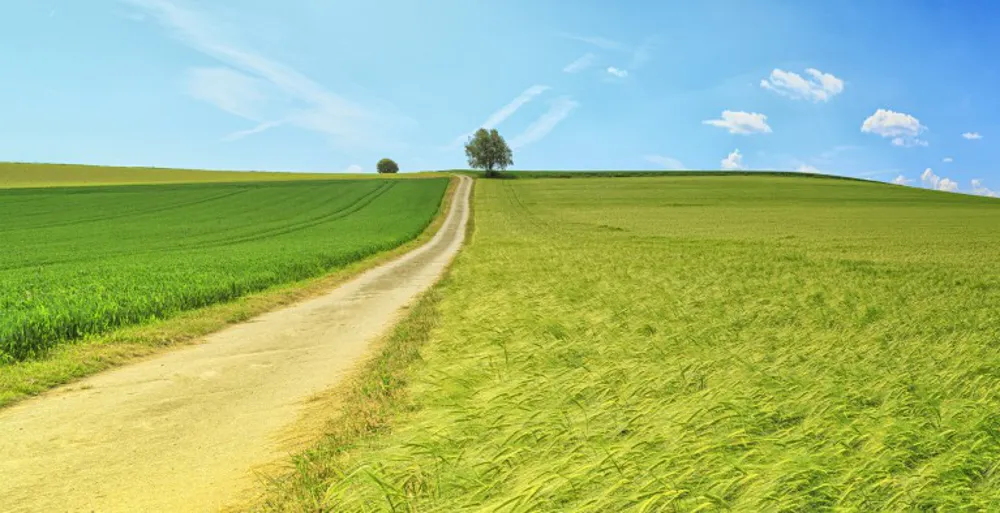

Artikel

Löken avslöjar: Gräset är grönare på andra sidan
Länge har elever spekulerat, undrat och funderat på om gräset faktiskt är grönare på andra sidan eller inte. Nu kan Löken avslöja, med över 96,3 % säkerhet, att gräset är grönare på andra sidan.
Gräset har åskådats i hundratals år. Experter tror att gräset först skådades så tidigt som 400 år f.Kr. och att ända sedan dess har människor funderat på om gräset är grönare på andra sidan eller inte. Vissa djur har också observerats anse gräset grönare på andra sidan men ingen fullständig undersökning har genomförts. Ingen har kunnat bevisa om gräset faktiskt är grönare på andra sidan eller inte med forskning och därmed har filosofer länge diskuterat frågan och debatten verkar aldrig ta slut. Detta hjälps inte av att många skeptiker har testat att se frågan från det andra perspektivet och därmed blivit stensäkra på att gräset faktiskt är grönare på andra sidan.
Många forskningsbaserade undersökningar har gjorts, men ingen har kunnat vara storskalig nog för att kunna framställa ett definitivt svar. Ett av de stora problemen har alltid varit att de största forskarna och vetenskapsmännen aldrig ens rört gräs. 2014 försökte en grupp forskare på Harvard university göra en storskalig undersökning där de, istället för att observera gräset själva, använde kollegor för att hämta gräset åt dem, men kollegorna som skulle resa till andra sidan för att hämta material återvände aldrig.
Nu har Löken, genom att sammanställa forskning från över 300 andra studier, kunnat få fram att gräset faktiskt är grönare på andra sidan. Skeptiker har länge påstått att det bara är solen som träffar grässtråna på andra sidan precis rätt, men detta visade sig inte vara anledningen till att gräset på andra sidan ser mer grönt ut. I själva verket är det öppenheten som den andra sidan erbjuder som verkligen framställer den mer lockande färgen. Nu har forskare börjat undra om borta är bra eller om snarare hemma är bäst.